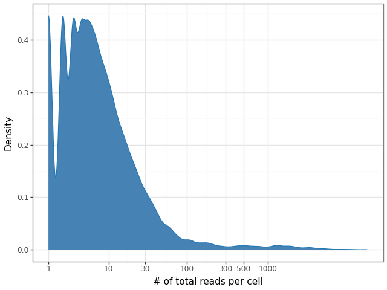
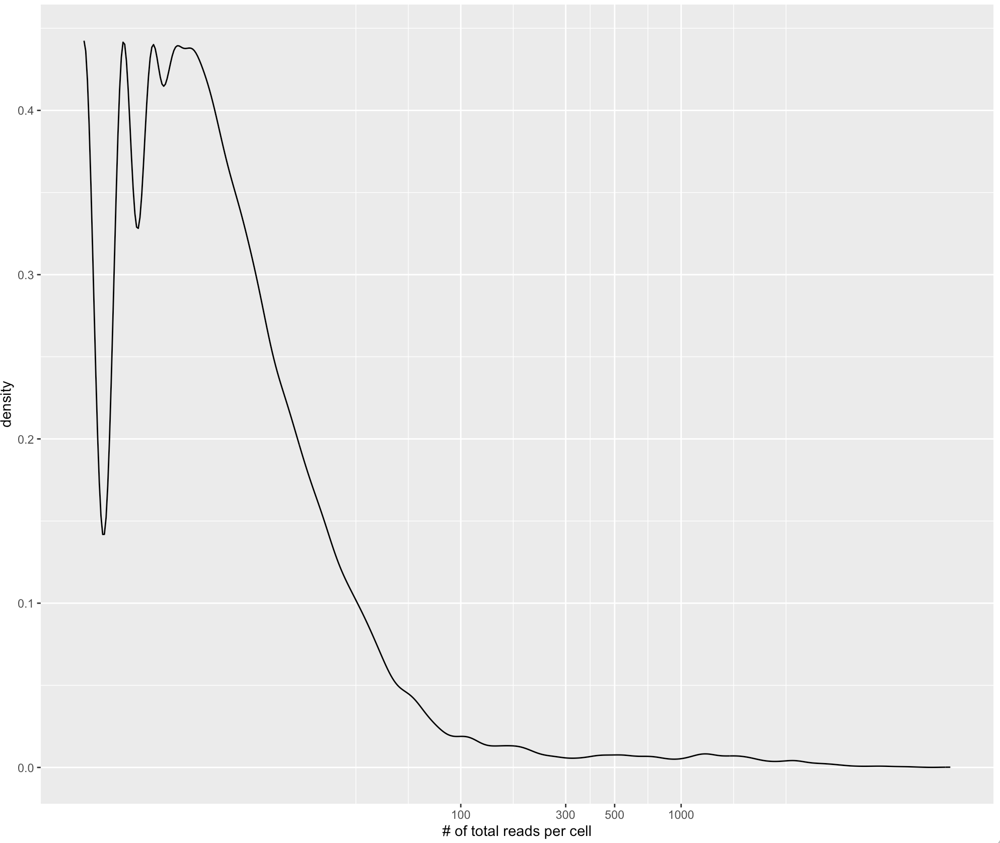

Welcome to CompBioWizard/scEpigenimics project
CAR-T Analaysis
File Update: June 3, 2025
Xusheng Ai (xai@mdanderson.org)
0. Configure the Python environment
Go to the Github repo and follow the Installation.
1. Samples K4me3: 50kb bin × cell
First read the BED file and create the tile matrix:
# Using Python 3
# If the tile‑matrix file is provided
python -m bin.genomicspipeline --config --matrix_file
# Else create the tile matrix from the BED file
python -m bin.genomicspipeline --config
# The tile‑matrix file will be stored under the results folder
2. Normalization: IterativeLSI
Tuning parameters: n_components = 50, 100, or 150;
dropout ratios for low-enriched tiles: 90 %, 95 %, and 99 %.
3. UMAP Plots
Initial experiment: retain all tile features and normalize the matrix with
n_components set to 50, 100, and 150.

Next, we set the minimum reads per tile to 10 (biological drop #1).
Based on the dropout rate and var_features, we tested several
parameter combinations.

Effect of varying dropout rate with n_components = 50:


3.1. Cell‑density plot & filter
After selecting tile features, we filtered out cells with low read counts.
The figure below shows the density plot of the cell × tile matrix
(var_features → 206 at a dropout ratio of 0.99).
The resulting tile matrix has dimensions 23 336 × 20 646 after removing tiles with fewer than 10 reads. With a per-cell read threshold of 500, 272 cells remain; the most abundant contains 12 686 reads.

The following UMAP plot colors cells by their read counts.

For comparison, we retained all cells but set n_neighbors = 50
and min_dist = 0.2 in UMAP, producing a layout distinct from the
plots above. The left UMAP plot is produced without dropping tile features (< 10).
The right UMAP plot is produced without dropping the tile features and cells.


3.2. imputation plot & filter
The left panel applies KNN smoothing to the tile matrix; the right panel shows the original pipeline without smoothing.

4. Filter & Density plots comparsion
For this experiment, we compare density plots from different bed files and different scripts. The following is the comparsion for the function file. One approach extracts information directly from the bed file using a bash script. The other involves using Python to read the bed file and generate a cell-by-tile matrix.
The left figure is a density plot generated by a Bash script that extracts unique cells from a bed file. The right figure is a density plot generated by a Python script.
 The difference in density plots between R and Python is due to the chosen bandwidth for calculating the density. Python functions tend to use a larger bandwidth, making the curve smoother and obscuring local structure, while R’s ggplot2 produces a curve that retains more detail.
4.1 The number of cell kept
To track the number of cells kept after filtering for cells with at least 300 unique fragments (K4), the count in the provided example is 389 (pool1), while the count from the Python script is 345 (pool1).
This differnce is because of in the python script, it does not count sub chrom informaiton like chromosome x and y
set the threshold to be 100:
The file information:results/tile_matrix_DJ_Hs_CM_0_K4me123_070122.npz
[filter] Kept 20646 / 57509 tiles (≥10 reads)
The information of the tile matrix :(23336, 20646)
The length of the totla reads:22053
The max of the reads:12686
[cell filter] keeping 575 / 22053 cells (reads ≥ 100)
[drop=0.90] kept 20646/20646 tiles; var_features→2064
[smooth] building KNN graph (k=15) …
[smooth] aggregating values …
[drop=0.90] kept 20646/20646 tiles; var_features→2064

set the threshold to be 300:
The file information:results/tile_matrix_DJ_Hs_CM_0_K4me123_070122.npz
[filter] Kept 20646 / 57509 tiles (≥10 reads)
The information of the tile matrix :(23336, 20646)
The length of the totla reads:22053
The max of the reads:12686
[cell filter] keeping 345 / 22053 cells (reads ≥ 300)
[drop=0.90] kept 20646/20646 tiles; var_features→2064
[smooth] building KNN graph (k=15) …
[smooth] aggregating values …
[drop=0.90] kept 20646/20646 tiles; var_features→2064

Set the threshold to be 500:
The file information:results/tile_matrix_DJ_Hs_CM_0_K4me123_070122.npz
[filter] Kept 20646 / 57509 tiles (≥10 reads)
The information of the tile matrix :(23336, 20646)
The length of the totla reads:22053
The max of the reads:12686
[cell filter] keeping 272 / 22053 cells (reads ≥ 500)
[drop=0.90] kept 20646/20646 tiles; var_features→2064
[smooth] building KNN graph (k=15) …
[smooth] aggregating values …
[drop=0.90] kept 20646/20646 tiles; var_features→2064

4.2 read another sample from pool2
We also ran the Python script with different bed files (pool1 and pool2). The following figure is the density plot from pool2 (K4).
set the threshold to be 100:
The file information:results/tile_matrix_pool2_DJ_Hs_CM_0_K4me123_070122.bed.npz
[filter] Kept 22780 / 57509 tiles (≥10 reads)
The information of the tile matrix :(23894, 22780)
The length of the totla reads:22987
The max of the reads:25720
[cell filter] keeping 534 / 22987 cells (reads ≥ 100)
[drop=0.90] kept 20646/22780 tiles; var_features→2064
[smooth] building KNN graph (k=15) …
[smooth] aggregating values …
[drop=0.90] kept 20646/22780 tiles; var_features→2064

set the threshold to be 300:
The file information:results/tile_matrix_pool2_DJ_Hs_CM_0_K4me123_070122.bed.npz
[filter] Kept 22780 / 57509 tiles (≥10 reads)
The information of the tile matrix :(23894, 22780)
The length of the totla reads:22987
The max of the reads:25720
[cell filter] keeping 305 / 22987 cells (reads ≥ 300)
[drop=0.90] kept 20646/22780 tiles; var_features→2064
[smooth] building KNN graph (k=15) …
[smooth] aggregating values …
[drop=0.90] kept 20646/22780 tiles; var_features→2064

set the threshold to be 500:
The file information:results/tile_matrix_pool2_DJ_Hs_CM_0_K4me123_070122.bed.npz
[filter] Kept 22780 / 57509 tiles (≥10 reads)
The information of the tile matrix :(23894, 22780)
The length of the totla reads:22987
The max of the reads:25720
[cell filter] keeping 252 / 22987 cells (reads ≥ 500)
[drop=0.90] kept 20646/22780 tiles; var_features→2064
[smooth] building KNN graph (k=15) …
[smooth] aggregating values …
[drop=0.90] kept 20646/22780 tiles; var_features→2064

4.3 concatenate samples from pool1 and pool2
set the threshold to be 100:
The file information:['results/tile_matrix_pool2_DJ_Hs_CM_0_K4me123_070122.bed.npz', 'results/tile_matrix_DJ_Hs_CM_0_K4me123_070122.npz']
[filter] Kept 34320 / 57509 tiles (≥10 reads)
The information of the tile matrix :(47230, 34320)
The length of the totla reads:46052
The max of the reads:28983
[cell filter] keeping 1205 / 46052 cells (reads ≥ 100)
[drop=0.90] kept 20646/34320 tiles; var_features→2064
[smooth] building KNN graph (k=15) …
[smooth] aggregating values …
[drop=0.90] kept 20646/34320 tiles; var_features→2064

set the threshold to be 300:
The file information:['results/tile_matrix_pool2_DJ_Hs_CM_0_K4me123_070122.bed.npz', 'results/tile_matrix_DJ_Hs_CM_0_K4me123_070122.npz']
[filter] Kept 34320 / 57509 tiles (≥10 reads)
The information of the tile matrix :(47230, 34320)
The length of the totla reads:46052
The max of the reads:28983
[cell filter] keeping 685 / 46052 cells (reads ≥ 300)
[drop=0.90] kept 20646/34320 tiles; var_features→2064
[smooth] building KNN graph (k=15) …
[smooth] aggregating values …
[drop=0.90] kept 20646/34320 tiles; var_features→2064

set the threshold to be 500:
The file information: ['results/tile_matrix_pool2_DJ_Hs_CM_0_K4me123_070122.bed.npz',
'results/tile_matrix_DJ_Hs_CM_0_K4me123_070122.npz']
[filter] Kept 34320 / 57509 tiles (≥10 reads)
The information of the tile matrix : (47230, 34320)
The length of the total reads : 46052
The max of the reads : 28983
[cell filter] keeping 546 / 46052 cells (reads ≥ 500)
[drop = 0.90] kept 20646 / 34320 tiles; var_features → 2064
[smooth] building KNN graph (k = 15)…
[smooth] aggregating values …
[drop = 0.90] kept 20646 / 34320 tiles; var_features → 2064